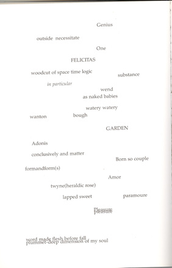
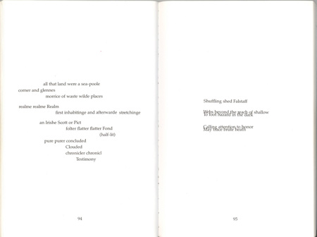

Elisabeth Joyce
“Things Overlap in Space and Are Hidden”:
Susan Howe’s “Tuning the Sky”
Susan Howe’s “Tuning the Sky” is a short poem that serves as a kind of epigraph to the much longer “Defenestration of Prague” first published in 1983.1 Early in “Tuning the Sky” the poem says, “world is my way in sylvan imagery” (89), setting up the poem’s approach to its investigation, for this poem is in itself an exploration like that of the archeologist, and its methodology develops through the “sylvan imagery,” that of the pastoral landscape that serves as a repository of all artifacts of human existence.
Because of Howe’s reference to “sylvan imagery” and because the sources for this poem are poets often connected to the pastoral tradition—Milton, Spenser, Marlowe—it is apparent that she is drawing on this lyric convention for the form of this poem. The poem, in fact, follows several pastoral conventions. It is not merely focused on nature, for that would not suffice to place it in this tradition, but by addressing itself to particular landscapes it develops irony through establishing itself “in opposition to a setting or situation erased or ignored … the real world,” as David Baker argues (7). In other words, implicit in the natural scene that is often idealized in the pastoral is the scene of the “real” world, that which we inhabit. We cannot “look” at the poetic eden without contrasting it with our own imperfect surroundings. However, the poet of the pastoral does not simply intend to depress the audience by revealing a much better yet unobtainable world, but rather through teaching the limitations of the real world to suggest what could be learned beyond it.2
Another aspect of the pastoral is its attention to the limitations of history. Louis Adrian Montrose says that poetic texts demonstrate the “historicity of texts: the cultural specificity, the social embodiment… and the textuality of history: the unavailability of a full and authentic past, a lived material existence, that has not already been mediated by the surviving texts of the period in question” (8). The pastoral tries to address these limitations through what John Bernard calls the “classic pastoral rhythm of withdrawal, contemplation, and return” (7).3 “Tuning the Sky” enacts this pattern explicitly through the closing of the window of “Quiet” on the poem’s first page, and the opening of that window on its last page. The “contemplation” of the poem is a meditation intended to fix the inadequacies of history, and Howe turns in this case to an exploration of the landscape of the mind to piece together fragments left from the past in order to reshape it and reconfigure the present.4
Ancestors leave only traces over time, their names lost, memories of them lost, but fragments of them remain in the landscape.5 “Everything,” as Marc Augé says, is “written on the soil” (56). The poet is sifting through these bits to discern in the silt of time events and people lost in the alluvion of history.6 The trouble for Howe is that it is the heavier bits of history that remain; the lighter and more ephemeral moments, actions, and/or humans, drift off without leaving any residue. We are left only with the sludge, the dregs, the lees, those slathered on layers of history that are heavy-handed and less refined.
I derive this notion of sedimentation from two sources: anthropology and archaeology. Howard Morphy sees the landscape in terms of layering and depicts the anthropologist’s agenda as one who digs into these strata to develop a coherent model of the culture of a group of people. The anthropologist, he says, explores “the ancestral mapping of the landscape, the sedimenting of history and sentiment in the landscape, and the way in which a person acquires a conception of landscape [to] examine the triadic relationship between the individual, the ancestral past, and the world in which he or she lives” (187).7 To Morphy the landscape is redolent with traces of past figures of a culture, as he says while describing the Yolnugu people: “[E]very aspect of the landscape can be thought to have connotations of the ancestral beings…. The landscape is redolent with memories of other human beings. The ancestral beings, fixed in the land, become a timeless reference point outside the politics of daily life to which the emotions of the living can be attached. To become this reference point the ancestral journeying had in effect to be frozen for ever at a particular point in the action, so that part of the action became timeless. Place has precedence over time in Yolnugu ontogeny. Time was created through the transformation of ancestral beings into place, the place being for ever the mnemonic of the event. They ‘sat down’ and, however briefly they stayed, they became a part of the place for ever. In Yolnugu terms they turned into the place. Whatever events happened at the place, whatever sequence they occurred in, whatever intervals existed between them, all becomes subordinate to their representation in space….Transformed into features of the landscape, mythological events are represented simultaneously even if they could be said to have occurred at different points in time” (188).8 In the transformation of events, times and people into place, these elements of the past become fixed through place, and therefore, removed from time-based measures. Place, rather than dates, events, or figures of history, becomes the locus for ancestral moments.
I believe that this notion that features of the past become place and integrated into the landscape structures this poem by Howe. Elements of the past are represented here by literatures of the English Renaissance. These bits of recorded essays, plays and poetries fall into the landscape and become transfixed through the landscape’s meaning, literally, of looking at the land, at features of the land. This, what the poem calls, “woodcut of space time logic” (92) indicates the petrification of history; it no longer changes once the past has become fixed on the land.
An essential component to Morphy’s theory is that the landscape is both in the present, so that people living now interact with it and immerse themselves in it, but at the same time, the landscape is replete with the past and with the mythology developed through those past events and lives.9 Through that development of mythology, the events and people of the past transmit to the present.10 “Because the ancestral beings not only created the landscape, but placed people in a particular relationship to it as perpetuators of the ancestral inheritance,” he argues, “the landscape is viewed simultaneously as a set of spaces for people to occupy. The dual aspect of the landscape—that it is both created by ancestral transformation and divided up by people—is reflected in the set of representations associated with land” (192). This duality underlies this poem, as well, I would argue, for the poet resists the calcification of history and, literally, throws the elements of the past into the air, out of the realm of the fixity of the soil, in order to discern the truth in mythology and recast the rigidity of history.
“Tuning the Sky” refers to “forged history” in a quotation from Edmund Spenser’s “A View of the Present State of Ireland.” Spenser’s essay suggests that the history recorded and codified in generational transmission, by the Irish, at least, is “forged,” that is, it is fabricated in relative distance from the truth. “Forge” also means, however, merely to create and to merge elements, as when two pieces of metal are combined through the application of great heat and pounding. This approach sets up the notion that history does not just happen—it is shaped and constructed. When the poem says, therefore, “not the true story that comes to nothing” (88), it declares that it will look at a history that, whether truth or myth or out and out lie, has an impact on future generations.
History, in that case, is in a perpetually mutable state, through which we can make
“e n d l e s sPROTEANl i n k a g e s” (91). We make connections between historical events in different ways at different times, according to, not just our own state, but the condition and selection of the historical elements that we have at hand. The extra spacing between the letters of “endless” and “linkages” mimics the length of time these linkages take (no measure), and the capitalization of “protean” shouts the core importance of change, especially change that is uncontrollable. Because a particular written history is a “woodcut of space time logic” (92), it is a fixed image of a moment in the fourth dimension that cannot account for change. It is based on two sources, both equally inaccurate: the “chronicler chronicl/ Testimony” (94) and memory, “mute memory vagrant memory” (89) which is a “diminution,” a “Distortion” (90) of the truth, of what really happened.
Because of this “distortion” what really happened becomes unspoken and therefore unheard, the “oblivious window of Quiet/ closing” (87), the “soundless parable possible quiet to flame” (87). The poem tries to articulate the silence: “sound sounde) of soun” (93) and “Sounding” (90). To sound is, however, not only about making a noise; it’s also about plumming the depths, and this is the work of the archeologist, that scientist who takes up fragments left from human occupation left in a midden, for example, and tries to piece together these bits of refuse into whole, or partially pieced together, vessels and implements in order to reconstruct the daily lives of these long dead ancestors.
The poem’s prime example of these artifacts is the “word shard.” It refers to words with “two letters worn off” (93), and these are scattered through the last seven pages of the poem: “simpl” (90), “castl” (91), “soun” (93), “chronicl” (94), “Palpabl,” “t,” and “wimpl” (96). Aside from the “t” sitting alone on the page and with no seeming connection to other letters or words around it, these “Stub[s],” as the poem calls them, are easily fleshed out. While palpabl could refer to palpable or palpably, and chronicl could be chronicle or chronicles or chronicler, the ambiguities are readily accommodated. Other words in the poem bear traces of their original context through such features as obsolete words like “lesing, “lopen,” “lowen” (91), spelling peculiarities like “ragtaile ragtayle” (93), or specific topics like “an Irishe Scott or Pict” (94).
Archaeology is equally committed to the notion of strata in the land, and to the idea that each residual layer can contain a wealth of information about a past culture. Schnapp, Shanks, and Tiews suggest that “the archaeological matrix … is considered as an amalgam of layers. The concept of stratiography is used to decode this amalgam…. But digging stratigraphically is impossible without the concept of horizontal surface interface—edges, moments of discontinuity when one layer becomes another” (10). I would suggest, however, that the immersive approach to landscape sees layers as less distinct than integrated, that the past interweaves with itself and with the present, blurring edges into indistinction.
In order to conduct this “dig” the poet must sound the depths of the landscape, that place where people have lived and written. Two main digging sites appear in this poem: the watery garden and the swire. The watery garden (92) uses Spenser’s Faerie Queene (esp. Book 3) for its source material: the Edenic scenes of Amor and Adonis. The words drift down the page in dispersal as if in colloidal suspension. Some of them sink so close to the bottom of the page that there is no room for the page number. Two lines are crushed together in this lower sector: “Pleasure/pleasure” and “word made flesh before fall/ plummet-deep dimension of my soul.” When particulate matter falls to the bottom of a body of water, it decomposes and merges with other fragments and bits, just as the letters of the words here intersect and pierce each other, dissolving “made” and “flesh” with “plummet” and “dimension” below them. “Word made flesh before fall” refers of course to Jesus Christ, but it also suggests that the words of the chronicler become embodied in the speaker before the fragments left fall in dissolution to form a varve in the water’s floor, transforming the words, therefore, into place. “Plummet” is not only “to fall” but a tool for sounding the depths, for measuring and exploring the bottoms; therefore, exploring the lower layers of the sludge permits the finding of the extent of the soul.

(92)
The other primary site of exploration is symbolized by the “white swire” (91). The swire, according to the OED, is among other things the “hollow near the summit of a mountain or hill, a gentle depression between two hills.” Through the run off of erosion, an illuvial accumulation or ablation till forms in the declivity. Because this section of the poem occurs within the dirt, the words are less dispersed than in the watery garden section, mimicking the greater compactness of the medium of soil. Much of this section derives from a mix of Spenser’s “A View of the Present State of Ireland” and his Faerie Queene, and usually consists of large enough fragments to identify a sequum conclusively.

(94-5)
Here too, is a depiction of the lower laminations of the deposits (95). The poet sifts through traces of people living in this “morrice of waste wilde places,” these remnants of past existence. Just before a reference to telling that “Clouded” tale of their lives, the poem says, “folter flatter flatter Fond (half-lit)” (94). Again, according to the OED, “folter” refers to foolish behavior, but flatter is not only for insincere praise. It is also the name for a tool that flattens things, for the workman who makes things flat, for the coal worker who couples and uncouples “flats,” railroad cars in a mine. In addition, and tellingly here, I believe, it means “floater” or “flutterer.” Elements of past human creation and use drift to the ground of human consciousness or historical note and become compressed over time, penetrating and merging into upper and lower sedimentary layers, developing concretions that appear in the poem as “Webs beyond the reach of shallow/ To foot hazard in the dark” and “Calling attention to honor/ May trace brute heath” (95). Just as the “flattening” is “half-lit,” the digging is in the dark as it is necessary to dig deep, but the deeper the dig, the smaller the fragments, and the scanter the evidence to reconstruct the past.
The last page of the poem presents odd bits from multiple sources—fragments cast onto the ground left only as morsels, shards that can’t be reconstructed and can only recombine in different configurations. While the poem starts with closing the window— “oblivious window of Quiet/ closing” (87)—it ends with opening the window onto the landscape (“Moone”) (96). The theatrical features on this last page—“mechanicals”, “moth crew,” “epilogue”—suggest the artificial character of the story, of history and its retelling. The view out the window is of interspersed elements, as if deflocculated into the air, of various works, still some Spenser, but also Shakespeare’s Henry V, Marlowe’s Edward the Second, Jonson’s Hymenaei, and Milton’s Comus. Throwing the pieces into the air avoids the static and calcified history that is changeless, permitting rethinking and reassessing, and particularly, reconfiguring history. These bits of works are perhaps more fragmented than the more orderly stratifications of the archaeologist, but they are at the same time more truthful for these let all voices speak in a rejuvenation created by the terminal stage of the pastoral poem. The last page of the poem is filled with one-syllable verbs: run, run, revel, hop, lob (96). History is perpetually shifting; the active poet will shift with it, dashing about the stage while floating to the ground to become a platy of shards of the past, tuning and retuning the sky, not the ground.
Notes:
[1] – Page references in the text will refer to the 1990 Sun and Moon collection of Howe’s poetry that includes this poem. [Back to text]
[2] – See Andrew Weiner for further development of this approach. [Back to text]
[3] – Bernard cites Leo Marx’s The Machine in the Garden (London: Oxford UP, 1964) in particular for thistheoretical perspective. [Back to text]
[4] – “In the pastoral mode,” as Eric Pankey suggests, “that object [of meditation] is often the landscape … the land ‘viewed’ and arranged by the reflective and shaping mind” (4). The meditation enacts what Bernard refers to as “a process of cultural retrieval” (7). Bernard argues that Spenser believed that the pastoral could redress or refine history: “Spenser conceived of poetry as a vehicle by which lost, forgotten, or misunderstood facets of human experience are recaptured” (7). [Back to text]
[5] – Ingold argues that “human life is a process that involves time…. This life-process is also the process of formation of the landscapes in which people have lived…..Every landscape is a particular cognitive or symbolic ordering of space…a ‘dwelling perspective’, according to which the landscape is constituted as an enduring record of –and testimony to –the lives and works of past generations who have dwelt with it, and in doing so, have left there something of themselves” (152). [Back to text]
[6] – Ingold talks about the landscape in terms of its multiple and complicated nature: “where land is thus quantitative and homogeneous, the landscape is qualitative and heterogeneous…. The landscape is a plenum…, so that every infill is in reality a reworking” (154). By turning to explore the landscape, Howe delves into these “infills,” but is also, in her delving, recreating them. [Back to text]
[7] – Frow describes history in terms of sediment as well, but largely in terms of language: “Although it seems to be depthless, a punctual disclosure of presence, space is in fact radically heterogeneous, since ‘the revolutions of history, economic mutations, demographic mixtures lie in layers within it, and remain there, hidden in customs, rites, and spatial practices’. Apparently legible at a glance, it is in fact composed of overlaid fragments of language” (56). [Back to text]
[8] – Similarly, Augé sees these land areas as repositories of memory: lieux de memoires. [Back to text]
[9] – Davidson discusses the same interaction between the past and the present when he says, “My portmanteau variation [of textual production], ‘palimtext,’ describes modern writing’s intertextual and material character, its graphic rendering of multiple layers of signification. The term also suggests the need for a historicist perspective in which textual layers refer not only to previous texts but to the discursive frame of the present in which they are seen” (9). [Back to text]
[10] – “The flow of action,” Morphy says, “was fixed for ever by the very fact of its transmission to landscape; it becomes a structure that exists outside the ancestral world” (189). [Back to text]
Works Cited:
Augé, Marc. Non-Places: Introduction to an Anthropology of Supermodernity. Trans.
John Howe. London: Verso, 1995.Bernard, John. “Pastoral Comedy in Book III of The Faerie Queene” SEL 23 (1983): 5-
20.Davidson, Michael. Ghostlier Demarcations: Modern Poetry and the Material World.
Berkeley: U of California P, 1997.Frow, John. “Michel de Certeau and the Practice of Representation.” Cultural Studies 5.1
(1991): 52-60.Howe, Susan. “Tuning the Sky.” Europe of Trusts. Los Angeles: Sun and Moon Press,
1990. 87-96.Ingold, Tim. “The Temporality of the Landscape.” World Archaeology 25.2 (1993): 152-
174.Montrose, Louis Adrian. “Renaissance Literary Studies and the Subject of History.” ELR
16 (1986): 5-12.Morphy, Howard. “Landscape and the Reproduction of the Ancestral Past.” The
Anthropology of Landscape: Perspectives on Place and Space. Eds. Eric Hirsch
and Michael O’Hanlon. Oxford: Clarendon, 1995. 184-209.Pankey, Eric. “Meditative Spaces.” Southern Review 42.4 (2006 Autumn): 788-93.
Schnapp, Jeffrey T., Michael Shanks, and Matthew Tiews. “Introduction: Archaeology,
Modernism, Modernity.” Modernism/Modernity 11.1 (January 2004): 1-16.Weiner, Andrew D. “Spenser and the Myth of Pastoral.” Studies in Philology 85.3 (1988
Summer): 390-406.